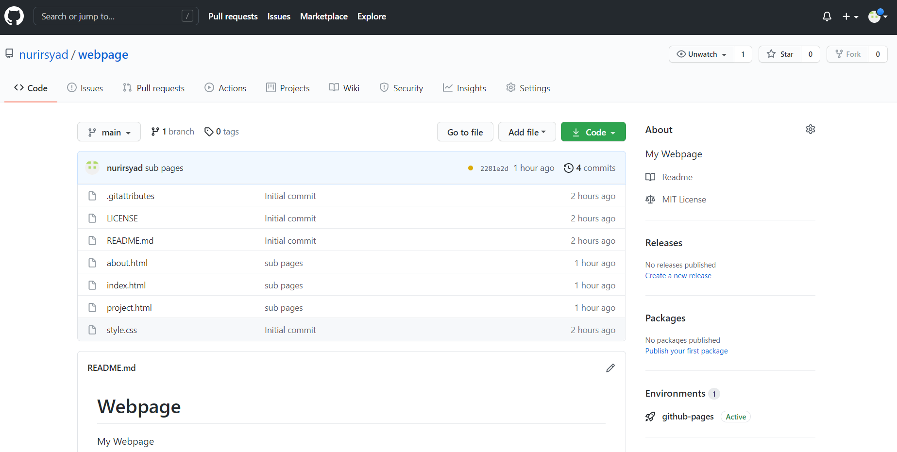
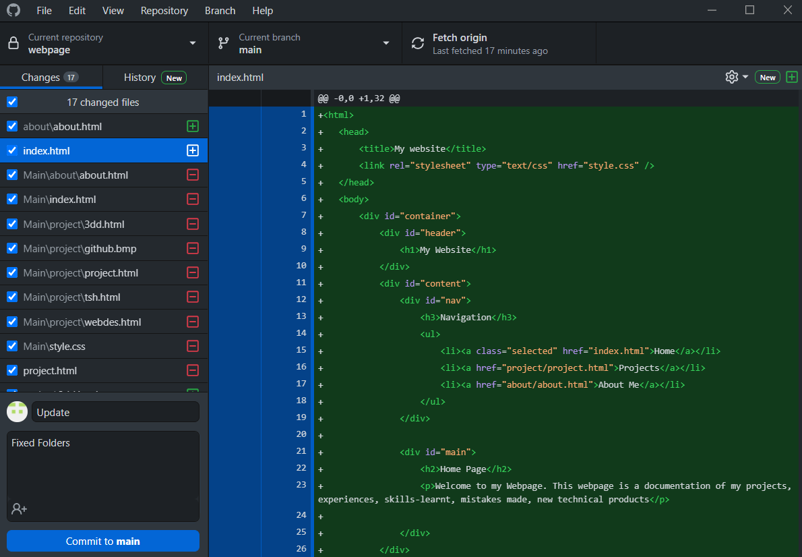

Website Design
This website is created through different softwares such as git, atom and published in github. These softwares allows me to create and edit html and css files easily and more efficiently.
HTML
HTML stands for Hyper Text Markup Language. HTML is the standard markup language for creating Web pages. HTML describes the structure of a Web page. HTML consists of a series of elements. HTML elements tell the browser how to display the content.
CSS
CSS is the language for describing the presentation of Web pages, including colors, layout, and fonts. It allows one to adapt the presentation to different types of devices, such as large screens, small screens, or printers.
GitHub
GitHub is a code hosting platform for version control and collaboration. It lets you and others work together on projects from anywhere. This tutorial teaches you GitHub essentials like repositories, branches, commits, and Pull Requests.
The image above shows an example of my github repositories which includes all my files to create a website.
Git
Git is a type of version control system (VCS) that makes it easier to track changes to files. For example, when you edit a file, git can help you determine exactly what changed, who changed it, and why.
Github Deskstop
Github Deskstop is a simpler version of git which allows me to interact with GitHub from the desktop. There is no codes needed to input as to interact with github.
The image above shows an example of commiting file changes to github.